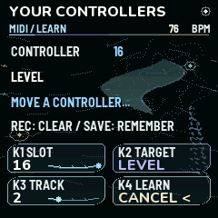
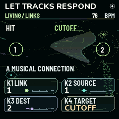
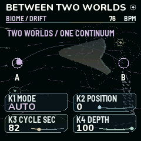

FM-1 · VERSION 2.0 / CREATIVE CONTROLS
Worlds that
listen and move.
Assign a controller, connect the movement of two tracks, or let a Biome travel between two captured states. Each tool is optional. Existing Biomes begin with Links and Drift switched off.
Open the playable workbench →

MIDI Learn. Global assignments, independent of your saved Biome.
Living Links. Four bounded connections between musical gestures and sound controls.
Biome Drift. Two captured sets of controls, one slow, continuous path.Give a controller a purpose
- Press GLO through MIDI to MIDI Learn. K1 chooses one of sixteen slots, K2 the target, K3 its track. Macro and Drift targets are global.
- Turn K4 right. Move a MIDI controller within twenty seconds. Its port, channel and CC are captured. The first gesture does not move the sound.
- Move the controller toward or across the stored value. The display changes from Move to match to Following your hand. This pickup avoids abrupt level or filter changes.
- Press GLO again for MIDI Mapping: port, channel (0 = Any), CC and On/Off. Capturing a duplicate replaces an overlapping assignment. Learned CCs take precedence over their built-in action, including an assigned macro's fine-byte partner.
- REC clears the selected slot. Hold REC or GLO for help. Stop playback, choose Internal clock, then press SAVE outside User Banks to remember mappings and preferences. A Biome bank save alone does not save global controller preferences.
Bank Select, fine CCs, sustain, RPN/NRPN, data entry and channel-mode messages are reserved. Notes, pitch bend and MIDI clock keep their existing roles. Reconnects, project changes and manual edits re-arm pickup. The mappings support USB, TRS, BLE or Any in software; physical transport qualification is reported separately.
Let one track influence another
- Press FX through Cloud to Living Links. K1 chooses a connection; K2 its source; K3 its destination; K4 its target.
- Press FX for Link Motion. Choose Hit, Envelope, LFO A or LFO B, then raise depth gently. Negative depth reverses the influence. Release shapes Hit decay from 50 ms to eight seconds.
- Try a kick hit opening a pad's cutoff, a bass envelope moving a texture's pan, or a slow LFO breathing more grain send into a distant voice.
- The two LFO options borrow the source track's Tidal rate and curve settings; their link cycles run independently of note activity. Muted and inactive rack sources send no modulation. Envelope and Hit respond to the source's actual activity.
- Save the complete Links setup inside your Biome. Zero depth leaves that connection inactive. The targets are cutoff, colour, pan, grain send, shared FX sends and event probability. Filter bypass still bypasses the filter; zero shared returns still produce no effect return.
Capture a world, then let it drift
- Press FX to Drift Scenes. Keep Drift Off. Shape the sound you want at A, then turn K1 right to capture it.
- Change some tone, cutoff, decay, level, pan, grain/delay/room sends or the four macros. Turn K2 right to capture B. You can leave this page and return while shaping either endpoint.
- On Biome Drift, choose Manual and move Position, or choose Auto for a slow round trip. Cycle ranges from 10 to 300 seconds. Depth blends the captured controls into your current base patch.
- Capturing requires Drift Off. Engines, note patterns, filter types and resonance are deliberately retained from the base patch. This is a controlled movement of sound controls; it does not allocate additional voices.
- Save in a User Biome to keep both endpoints and the cycle. Stop first. ENV can undo the last capture. Drift continues while playing individual notes even when the sequencer is stopped.
With Journey
Your home Biome supplies Links and Drift to each section. Carried voices keep their continuity. Live macros, levels, cutoff, pan, sends and Drift position/depth can be played temporarily; Stop restores the editable home project. Stop before editing the structure, recapturing endpoints or saving.
Shape a phrase
Enable the step sequence on a synth track. Open Phrase Tools from the six-track grid and leave K1 on Phrase. With K4, choose Accent for velocity or Articulate for gate length. Turn K3 to set the strength and use K2 to see the first or second sixteen-step section. The preview shows both values for each played step. Press SEL to apply, or ENV to undo your last edit. Turn off recording and stop an active Journey before applying.
Shape a Vowel Bloom voice
In Sound, choose Vowel Bloom. Turn K1 from oo through ah to ee, use K2 to soften or emphasise the upper partials, then use K3 for more movement after each note starts. BREATHE on Filter adds slow timbre movement. Hold EDIT on Sound for the control hints.
Coming from 1.4 or 1.5
PLAY toggles transport, LFO freezes the granular tape, and a long press opens the control hints. EDIT still leads through Sound, Filter, Envelope and the mix pages. On Live Atlas and Large Tracks, SEL mutes the selected track. Muted tracks show OFF.
Press HOME while on the Home screen to cycle through Live Atlas, Large Tracks and the Biome Browser. In the browser, SEL loads the highlighted Biome and REC toggles its favorite. GLO from Large Tracks or the Biome Browser opens User Banks. The extended GLO sequence adds MIDI Learn and MIDI Map after MIDI.
Old exported Biomes can be opened in the 2.0 browser instrument or imported into a connected 2.0 FM‑1 using its editor. Keep your original bank backup for returning to the firmware version that created it.
Keep a copy
Export a live JSON for the complete Biome. Use an .mddb bank backup for saved projects, banks and controller preferences. Neither contains the live granular recording or device calibration. Old v10 Biomes migrate to v11 with creative motion off. Version 2.0 uses the v12 patch format. Keep a backup made with the older firmware if you plan to return to it.